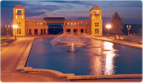

RECOMENDADOS:
O Museu do Olho é o apelido carinhoso do Museu Oscar Niemeyer (MON), localizado em Curitiba, devido ao formato icônico do seu anexo principal que lembra um olho humano. É o maior museu de arte da América Latina, com foco em artes visuais, arquitetura e design. Ele fica na Rua Marechal Hermes, número 999, no bairro Centro Cívico. O horário de funcionamento é de terça a domingo, das 10h às 18h, com a venda de ingressos e o acesso às salas de exposição permitidos até as 17h30. Para visitar, é preciso pagar entrada, que atualmente custa 36 reais a inteira e 18 reais a meia-entrada. No entanto, o museu oferece entrada gratuita para todo o público todas as quartas-feiras e também no último domingo de cada mês. Além disso, menores de 12 anos e maiores de 60 anos não pagam em nenhum dia, desde que apresentem documento comprobatório.

O Parque Tanguá é um dos principais parques de Curitiba e faz parte do projeto de recuperação de áreas degradadas da cidade, tendo sido construído sobre antigas pedreiras desativadas. Ele é famoso por seu imponente portal de entrada, um mirante com vista panorâmica para uma cascata de 45 metros e um túnel escavado na rocha que une dois lagos. O parque fica localizado na Rua Oswald Maciel, s/n, entre os bairros Taboão e Pilarzinho. O acesso ao espaço é totalmente gratuito para todos os visitantes. O horário de funcionamento é diário, permanecendo aberto das seis da manhã até às dez da noite, sendo um dos lugares preferidos dos curitibanos e turistas para assistir ao pôr do sol. Além da vista, o local conta com pistas de caminhada, ciclovia e uma lanchonete anexa ao mirante.

Um jardim botânico é um espaço dedicado à preservação, ao estudo científico e à exibição de coleções de plantas vivas, funcionando como um museu vivo da biodiversidade. No Brasil, os mais procurados estão em Curitiba, Rio de Janeiro e São Paulo. O Jardim Botânico de Curitiba fica na Rua Engenheiro Ostoja Roguski, funciona diariamente das seis da manhã às sete e meia da noite e tem entrada gratuita. Já o Jardim Botânico do Rio de Janeiro está localizado na Rua Jardim Botânico, abre todos os dias a partir das oito da manhã, exceto às quartas-feiras quando abre às onze, e fecha sempre às cinco da tarde; para este é necessário pagar entrada, com valores que giram em torno de quarenta reais para brasileiros. O Jardim Botânico de São Paulo situa-se na Avenida Miguel Estefno, abre de terça a domingo das nove da manhã às cinco da tarde e também exige o pagamento de ingresso, que custa aproximadamente quarenta reais na bilheteria física.